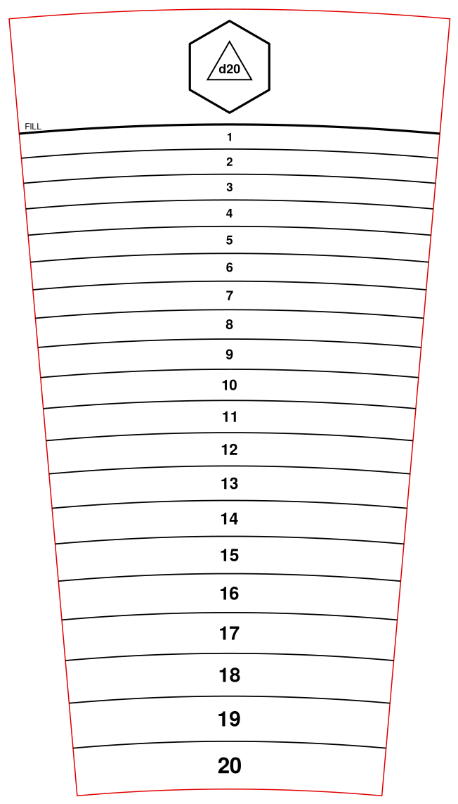

One scale per die
A sticker for each die (d4 to d20) with bands of equal volume from empty to a fill line. The bands get thinner toward the rim because the glass widens.
LearnedDrinking the whole glass always lands on the bottom number. The result is predictable, and it takes a full pint to get one roll.